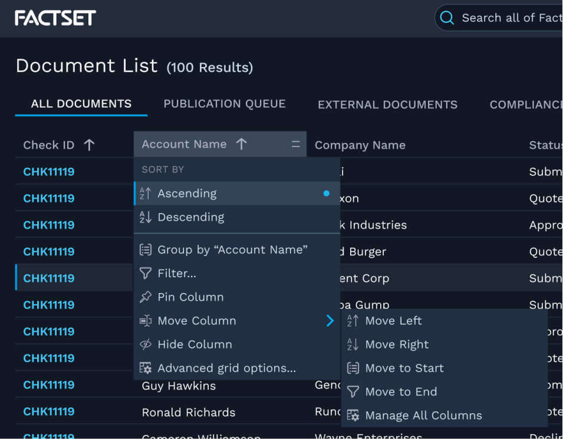

Fusion Design System
August 2020 to June 2022 • FactSet
The Fusion Design System is FactSet’s new design system, built using atomic design principles. Focused on workflow-driven applications with a sleek visual design, the core tenets of Fusion are that it is responsive, adaptive, and accessible.
My role
- Designer — I designed and prototyped our components and patterns, collabing closely with designers & engineers alike.
- Figma Library Guru — I led the construction of the majority of the components in our Figma library, creating lightweight, easy-to-use, and flexible Figma components. (Fun fact! I was an intern for FactSet’s UX team back in 2018, and my summer project was to build out FactSet’s first Figma component library.)
- Systems Overseer — I consulted with designers on app teams to advise on designs from a systems perspective. We met biweekly to iterate on designs and identify gaps in our design system to address.
Work Examples
Date Inputs with Rolling & Relative Dates
I designed the original date input and calendar components as well as the pattern for adding rolling or relative dates. I also wrote the design guidance on how to use each.


Drag and drop patterns
I worked on several drag and drop patterns in multiple contexts, ensuring all of them were accessible and developed a pattern now implemented almost everywhere drag and drop is available.
Grid states and interactions
FactSet’s products feature lots of complicated grids. I designed a system of states and interactions that is intuitive to view and works seamlessly together.
Case Study: Grid Actions & Settings
Problem
FactSet users use multiple applications and have to learn each unique way to interact with a grid. How might we create a seamless experience from app to app for grid users?
The Team
- 3 UX Designers
- 1 Accessibility expert
- Design systems engineering team
Ideation
We audited our applications, both new and old, to explore the needs of our app teams. We used this information to inform the structure of our shared grid settings experience.
We also researched other grids, with a focus on web-based applications. Among these were ag-grid, Google Sheets, and, of course, Excel. The common thread in many applications was a context menu triggered from the column header.
Solution
Part 1: Context Menu
Performing actions in-context was a common use case across the board. We designed a context menu attached to the column header for this.
Part 2: Grid Display Drawer
Other actions and settings would live in a drawer attached to every grid, accessible via the context menu or the settings button on top of every grid.
The drawer has three views:
- Options: for grid level settings, sorting/grouping, and other grid level actions
- Filters: for managing filters on each column in one place
- Columns: for managing which columns are in view
Afterwards
A number of spinoff components and patterns were enhanced or created to support this feature, helping us grow our design system further.
We've also integrated a number of improvements and new features after receiving feedback from users and app teams.